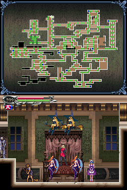
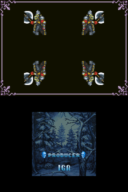
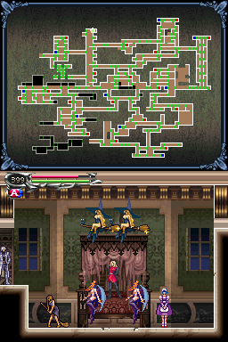
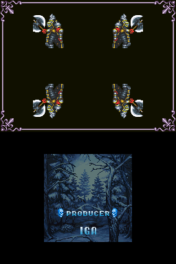

Castlevania: Dawn of Sorrow

Complete on 2023-02-12
5 / 5
Release Date: Oct 4, 2005
Meta Score: 89
Screenshots
 



Notes
It's a direct sequel to Aria of Sorrow, the best Castlevania game on the GBA and one of the best games overall. Copy and paste pretty much everything from the GBA review in here.
A few criticisms specific to Dawn:
It's really similar to Aria. A lot of the sprite work seems to be the same copied over, the game is very visually similar (with a little more space to breathe on DS screens).
The DS's hardware isn't really being taken advantage of. The top screen is only map/status screen. There's a gimmicky mechanic where you have to finish off bosses by drawing a "magic seal" pattern. And one upgrade where you can smash blocks by touching the touch screen which is very underutilized.
As with the first game, it can be tricky to remember where you need to use new upgrades you unlock and certain rooms are awkward to get back to meaning it's annoying if you go there and realise you can't actually progress through them. Also it's weird that there's no really convenient save point next to a warp room.
There's some of the "long straight hallway with 50 copies of the same enemy" design which is always a low point of these games.
In terms of what they added, the game is generally a bit bigger and better. There's no a weapon upgrade system using monster souls, which gives you an incentive to hunt specific monsters even if you're not going for 100% collection, and lets you pick whatever weapon you want to upgrade and keep for the entire game.
Aria of Sorrow was great. And the biggest criticism of this game is that it is mostly Aria of Sorrow 1.5, which isn't much of a negative. Easy 5/5.